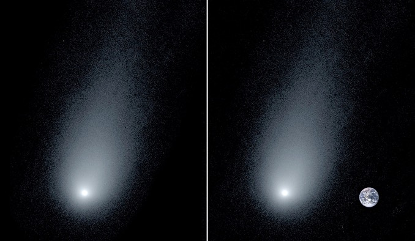

Astronomers spot a Neutron Star missing for over 30 years
The leftovers from a spectacular supernova that revolutionized our understanding of how stars end their lives have finally been spotted by astronomers at Cardiff University.
ISRO successfully launches RISAT-2BR1
This is PSLV's 50th mission. PSLV-C48 also carried 6 US satellites and one each from Israel, Italy and Japan
.jpg)
Starliner Spacecraft's Landing A Critical Moment
Boeing's first Starliner spacecraft will return to Earth Dec. 22 to cap a rocky test flight that, despite some successes, left the capsule in the wrong orbit and unable to reach the International Space Station for NASA as planned.

NASA's 'Quiet' Supersonic Jet Experiment
NASA's 'Quiet' Supersonic Jet Experiment Was Just Approved For Final Assembly. NASA has a bold plan to bring supersonic transport (SST) back to life: the X–59.

Interstellar Comet 2I/Borisov sports 160,000 kilometre tail
A fresh image of interstellar comet 2I/Borisov shows a 160,000-kilometre-long (100,000-mile-long) tail of icy debris stretching away in its wake as it races toward perihelion, on track to pass within about 300 million kilometres (190 million miles) of the Sun on 8 December.
Astronomers thrilled by most powerful gamma ray burst
A suite of space- and ground-based telescopes detected the most powerful gamma ray burst ever seen, an mind-boggling flash from an exploding star that released more energy in a few seconds than the Sun will generate over its entire 10-billion-year life. The detected radiation was up to a trillion times more energetic than visible light.